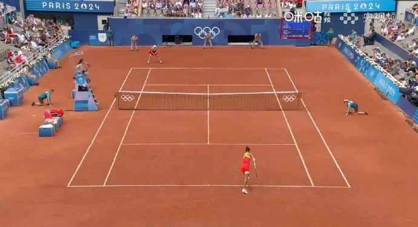
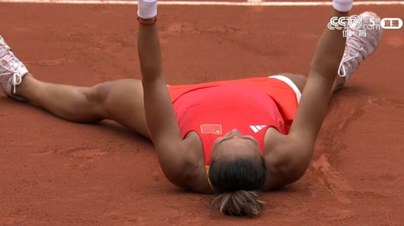
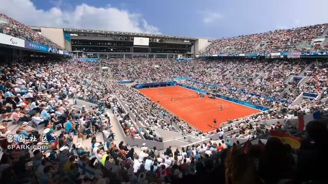
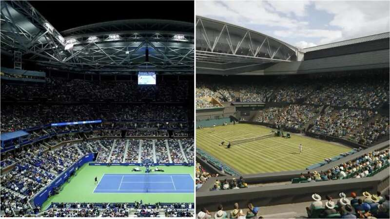
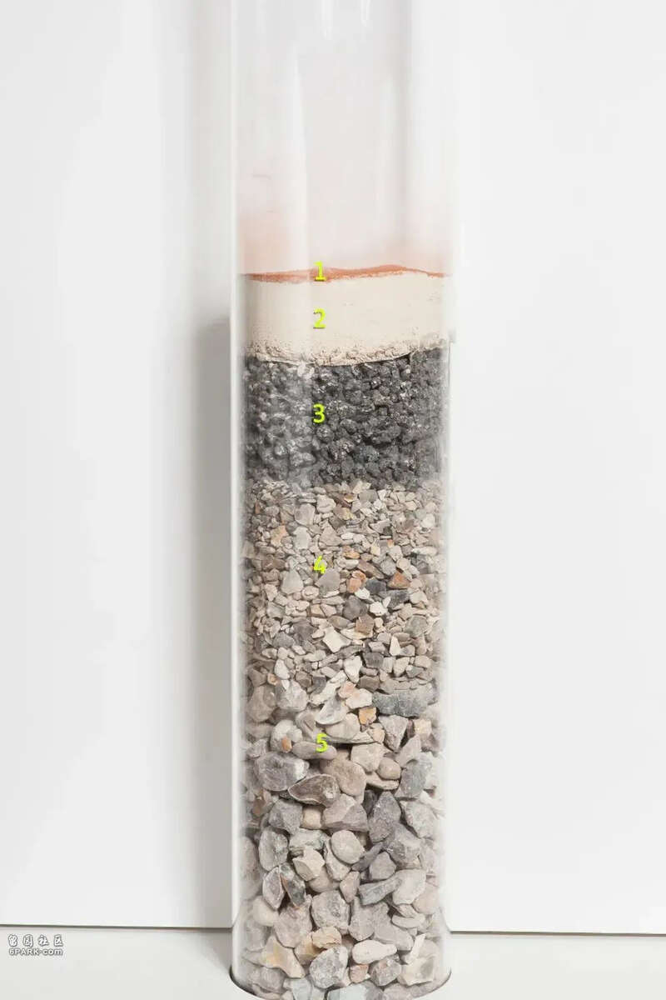
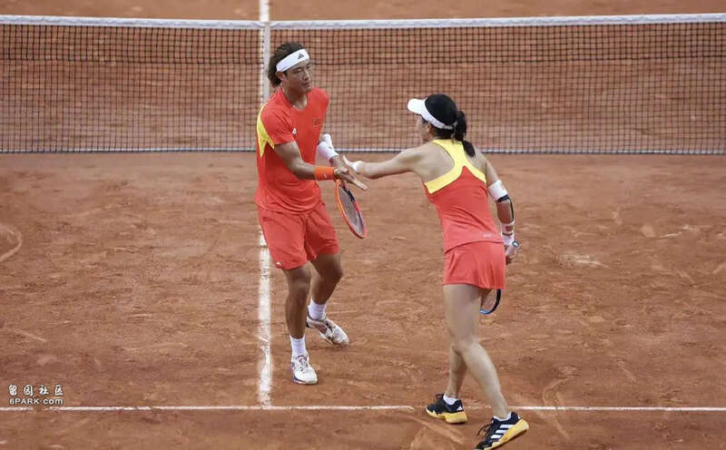
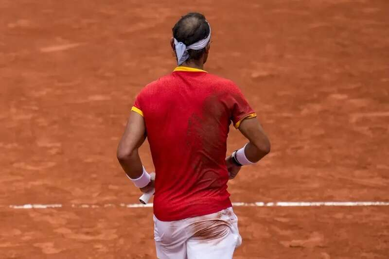
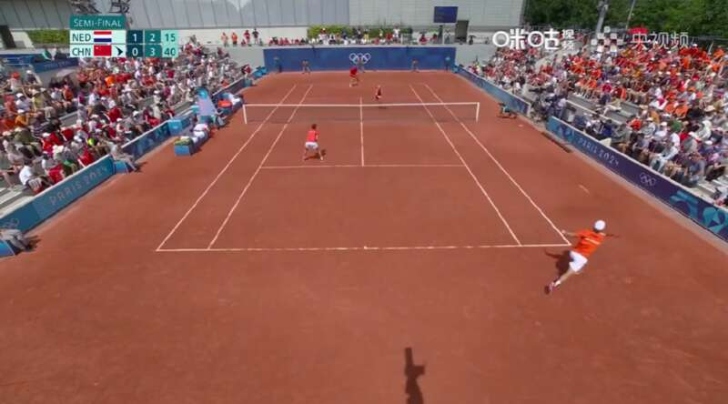
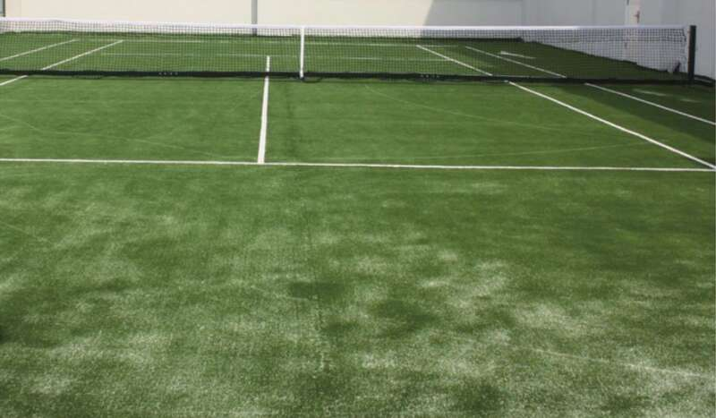
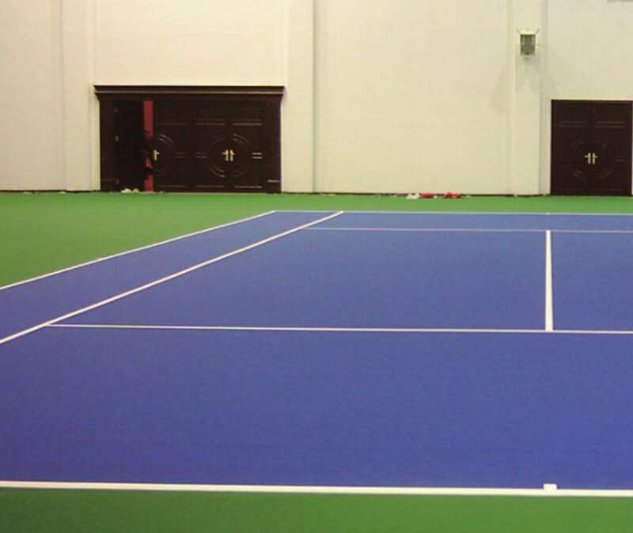

见“郑”历史！
北京时间8月3日晚，巴黎奥运会网球女单决赛“开战”，我国选手郑钦文迎战克罗地亚选手维基奇，最终郑钦文6-2、6-3战胜维基奇，拿下中国网球首枚奥运单打金牌。
在观看郑钦文和维基奇的精彩对赛时，不少网友发现，和日常生活中常见的平整、光滑的硬地网球场不同，两人是在一片“红土地”上进行比赛的。

图源：微博@咪咕体育
获胜后躺地上庆祝的郑钦文，背上还粘了一大片红土。

图源：央视网视频截图
所以，为什么要让运动员在红土地上打网球？
“红土荣耀”
事实上，这可不是什么“红土地”，而是打网球专用的红土场（Clay Courts）。至于为什么要在这种地面上打球，还得从红土场的诞生开始说起。
公元12~13世纪，一种在室内用手击球的游戏风靡于法国教士群体，以调剂单调的生活。后来，这种游戏逐渐在英法等国流行，还拥有了专门的场地、球拍和“网球”的名称，近代网球运动的雏形就此诞生。
1873年，近代网球之父、英国少校沃尔特·克洛普顿·温菲尔德对当时的网球打法加以调整改良，提出了一套接近于现在网球打法的新体系，运动场地也被他正式从室内搬到了室外的草坪上。随后，温菲尔德还写了一本名为《草地网球》的书，在书中对这项运动进行了详细的规则介绍和宣传推广。
很快，新的“草地网球”就成为当时最受欢迎的室外运动之一。但不久之后，这项运动的一个“缺陷”也浮上了水面。
19世纪80年代的某一天，多次获得温网冠军的英国网球运动员威廉·伦肖和他的孪生兄弟欧内斯特·伦肖在法国戛纳地区训练时发现，网球场内的草地在烈日烘烤下极易枯萎，流行多年的草地球场和法国南部的温度条件“犯冲”。
不得已，他们只能另想办法“拯救”球场。最终，兄弟二人在距离戛纳6千米的Vallauris（一个专门生产手工陶土制品的村庄）找到了一些用废弃陶罐磨成的红色陶土粉末，并决定把它们铺在球场上。就这样，伦肖兄弟创造了最初的红土网球场。
经过140余年的发展，红土场如今已遍布世界各地，其中最负盛名的，就是本届奥运会的网球赛场——法国罗兰·加洛斯体育场，该体育场于1928年建成，其名称来源于法国民族英雄罗兰·加洛斯。
一直以来，罗兰·加洛斯体育场都是网球四大满贯赛事之一的法国网球公开赛（法网）举办地，本届奥运会将网球比赛举办地定在这座体育场也很合乎情理。

罗兰·加洛斯体育场|图源：奥运会官网有意思的是，这也是自1992年巴塞罗那奥运会以来，奥运网球赛事第一次被安排在红土场举行。2012年伦敦奥运会的网球比赛举办地温布尔登网球场是典型的草地球场，上一届东京奥运会的网球赛事则在有明网球公园举行，是比较常见的硬地球场。

左为硬地场，右为草地场|图源：美国网球公开赛官网，温布尔登网球锦标赛官网红土场无论是在奥运会里还是在我们日常生活中的出现频率都不怎么高，难怪有观众会对这片“铺了一层红土”的场地产生好奇心。
网球场上的红绿蓝
除了红土场外，网球比赛场地还有草地场和硬地场。
先说今天的主角——红土场。
红土场更确切的名字应该是“软性球场”。和初版红土场对比，如今的红土场已经拥有了更为复杂的结构。
以罗兰·加洛斯体育场的红土场为例，它共有五层，总厚度达80厘米。表面的那一层“红土”通常是碾碎的红色砖土粉末，厚度只有1~2毫米。

图源：法国网球公开赛官网红土之下，第二层是粉碎的白色石灰石，大约6~7厘米厚，第三层是7~8厘米厚的煤渣，再往下就是至少30厘米厚的碎石块，最下面则是石块组成的排水层。通常情况下，罗兰·加洛斯体育场的每个球场至少需要消耗1.1吨~1.5吨红土。
由于表面铺有红土，运动员们可以在球场上合理运用“滑步”的方式移动，在急停急回的击球过程中迅速到位并节省体能，网球赛场上也一直有着“无滑步，不红土”的说法。

滑步|图源：法国网球公开赛官网
是不是看起来轻松又帅气？但实际上，这个动作需要运动员们拥有非常出色的奔跑、移动能力，一般人做这个动作很可能摔个四脚朝天。
另外，网球在红土场上落地时会与地面产生较大的摩擦，球速比较慢；且这类比赛的回合数往往也不少，5局3胜制几乎是常态，一场比赛打上三个多小时都算正常。打到最后，考验的往往是运动员打“拉锯战”的能力，这就要求参赛者们拥有超群的技术和惊人的毅力，才能笑到最后。
如果说红土场有哪些“弊端”，那大概就是对于有洁癖的人来说，红土场实在是不太友好，毕竟要在砖土上跑来跑去，不管是鞋子上还是身体上，不蹭到土的概率实在太低。今年巴黎奥运会，我国组合王欣瑜、张之臻在网球混双决赛中摘取银牌，两人也是在红土场上比赛，可以看到两人的鞋子都像个“脏脏包”。

图源：微博@央视新闻当然，只是鞋子变“脏”已经不容易了。今年奥运会的一场男子双打网球比赛结束后，西班牙运动员拉斐尔·纳达尔（Rafael Nadal）直接收获了一身“红土皮肤”。

图源：美联社在接受美联社采访时，希腊网球运动员玛丽亚·萨卡里（Maria Sakkari）甚至调侃道：“在红土场上打球比洗袜子容易得多。”
此外，红土场上的各种标记线在土层表面，一场比赛打下来，实线都被“到处跑”的红土弄成了虚线，也算一个小小的“缺陷”吧。

图源：视频截图那么，在草地场上打球情况如何？
如今的草地场一般包括天然草场和人造草场两种。天然草场是网球运动的“原始配置”，是历史最为悠久也最有传统意义的一种场地，其特点是网球落地时与地面的摩擦较小，球的反弹速度快，所以对球员的反应、灵敏、奔跑速度等要求非常高。因此，各种强攻型的战术被视为草地场上的制胜法宝。
不过，由于天然草场的保养，维护费用都较为昂贵，在20世纪80年代后，多半天然草场逐步被人造草场所取代。目前，温布尔登网球公开赛（温网）是唯一在天然草场上举行的大满贯赛事。

草地场|图源：参考资料[3]再说硬地场，它是日常使用最为广泛的网球场地，也是我们在生活中最可能接触到的一种球场。
硬地场一般由水泥和沥青铺垫而成，上面有塑胶面层，这种球场的特点是表面平整、硬度高，球的弹跳非常有规律且反弹速度很快。
由于这种球场适用于多种气候环境，颜色持久且具有极佳的耐磨性能，平时的清扫和维护都较为简单，因此，它也是最多被运用于比赛的网球球场。像是四大满贯赛事中的美国网球公开赛（美网）和澳大利亚网球公开赛（澳网），就都是在硬地场上举行的。

硬地场|图源：参考资料[3]需要注意的是，硬地场的弹性和其他球场相比较差，初学者在硬地场上练球时需要注意加强自我保护，尤其是膝盖、踝关节等部位，若是奔跑、移动的方法不正确，就很容易对一些部位造成伤害。
总的来说，无论是草地场、硬地场还是红土场，都是网球赛事里的经典场地，对运动员的要求各有不同，不同运动员擅长的场地也有所差别。
像是在2003年~2007年间实现温网五连冠的瑞士运动员费德勒就曾被称为“草地之王”，但在红土赛场上的他，却数次败给有“红土之王”称号的纳达尔。此前败于郑钦文之手的波兰名将斯瓦泰克凭借着23岁就拥有4个法网冠军的成绩被誉为“红土女王”。
如今，在这届巴黎奥运会，摘得中国网球队首枚奥运会女单金牌、创造历史的21岁中国姑娘郑钦文，成了名副其实的“红土女王”。